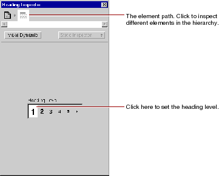
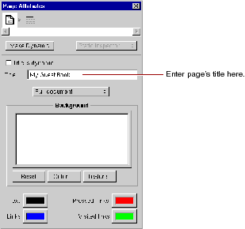

Table of Contents
Table of Contents  Previous Section
Previous Section
A panel titled Heading Inspector appears. It allows you to set the level of the heading.

The text is now part of an <H1> tag, and it is displayed in a larger font.
The top of the panel shows the element path to the selected element. Any element can be contained in a hierarchy of several levels of elements and can in turn contain other elements. Here, the element path shows that the heading element is contained in the page element, which is the top level of the hierarchy. By clicking the icons in the element path, you can easily choose different elements in the hierarchy.
Each element has its own Inspector that allows you to set properties appropriate for the element. The Page Attributes Inspector allows you to set properties such as the page's title and its text color.

Although WebObjects Builder supports undo, it is always a good idea to save your work frequently.
 Next Section
Next Section